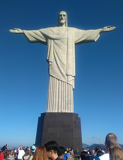

Se denominan las nuevas siete maravillas del mundo moderno a los monumentos que resultaron los ganadores en un concurso público e internacional celebrado en 2007, inspirado en la lista de las siete maravillas del mundo antiguo y realizado por una empresa privada de nombre New Open World Corporation. Más de cien millones de votaciones, a través de Internet y SMS, dieron como resultado esta nueva clasificación. La iniciativa partió del empresario suizo Bernard Weber, fundador de la empresa, algo que podría expresar cierta parcialidad. Las siete maravillas modernas son:
| NO. | Maravilla | Ubicación | Conoce más acerca de | Imagen |
|---|---|---|---|---|
| 1 | Chichén Itzá | Yucatán, México | Chichén Itzá |  |
| 2 | El Coliseo | Roma, Italia | El Coliseo |  |
| 3 | La estatua del Cristo Redentor | En Río de Janeiro, Brasil | Cristo Redentor |  |
| 4 | La Gran Muralla China | En China | La Gran Muralla China |  |
| 5 | Machu Picchu | En Perú | Machu Picchu | .jpg) |
| 6 | Petra | En Jordania | Petra | |
| 7 | El Taj Mahal | En Agra, India | Taj Mahal | .jpeg) |